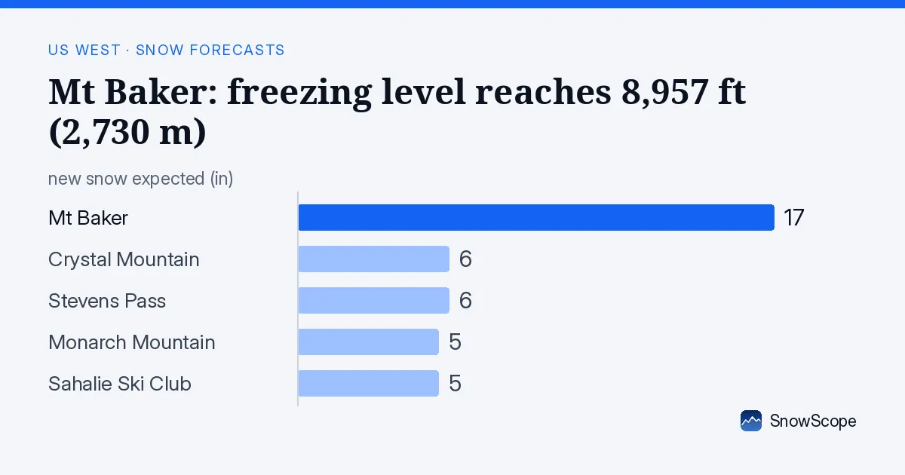
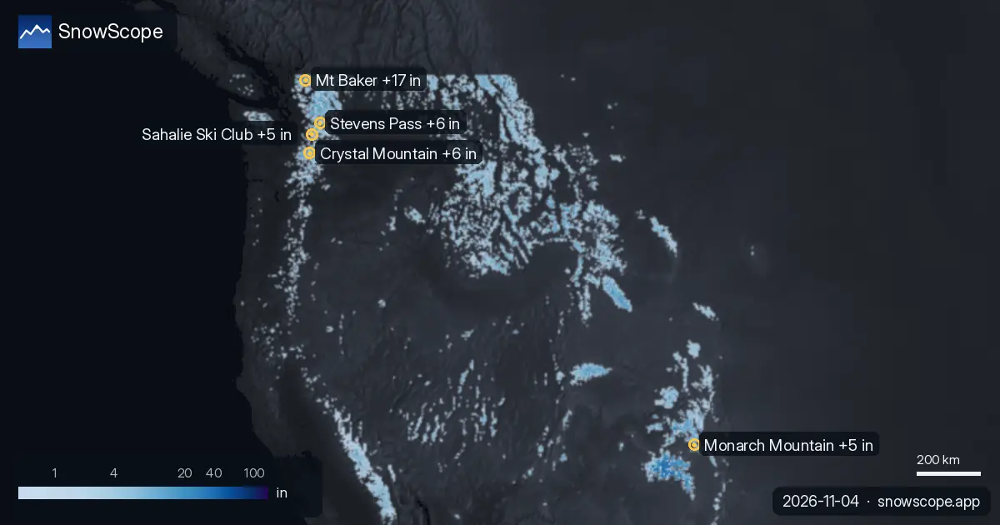

Mt Baker: freezing level reaches 8,957 ft (2,730 m)
On November 6, the freezing level at Mt Baker will climb to 2,730 m (8,957 ft), far above the lift top. Our model forecasts that rain will fall instead of snow across most of the mountain on that day.
See the live snow forecast for Mt Baker in the SnowScope appSnow depth, powder alerts and the 3D map, free.
Rain replaces snow on November 6
The freezing level on November 6 will jump to 2,730 m (8,957 ft), which is 1,174 m (3,852 ft) above Mt Baker's lift top at 1,556 m (5,105 ft). This means the precipitation will be rain, not snow, at all elevations where people ski. The upper slopes of the mountain will see the boundary between wet snow lower down and rain higher up. This is not ideal for early-season snow cover, as rain on thin snow accelerates melt and can wash away the base you have built up.
The earlier part of the forecast is more stable. On November 5, the freezing level stays lower, reaching a maximum of 1,650 m (5,413 ft), so snow will fall at higher elevations and rain will touch lower slopes.
| Resort | Snow depth | New snow, 72 h | Coming, next days | Top |
|---|---|---|---|---|
| Mt Baker | 14 in (36 cm) | 0 in (0 cm) | 17 in (44 cm) | 5,105 ft (1,556 m) |
| Crystal Mountain | 8 in (21 cm) | 0 in (0 cm) | 6 in (14 cm) | 6,798 ft (2,072 m) |
| Stevens Pass | 9 in (23 cm) | 0 in (0 cm) | 6 in (14 cm) | 5,666 ft (1,727 m) |
| Monarch Mountain | 7 in (19 cm) | 4 in (9 cm) | 5 in (13 cm) | 11,804 ft (3,598 m) |
| Sahalie Ski Club | 7 in (19 cm) | 0 in (0 cm) | 5 in (13 cm) | 3,064 ft (934 m) |

Where new snow will stick
Over the next three days, Mt Baker will receive 44 cm (17 in) of new precipitation, spread across November 5, 6, and 7. However, the form of this precipitation changes with elevation and the freezing level. At the mid-elevation of 1,331 m (4,367 ft), the model shows about 25 cm (10 in) of new snow over the next seven days, with some of that falling as rain on November 6.
At the top, 1,556 m (5,105 ft), around 35 cm (14 in) is forecast, but mixed rain and snow will fall there on November 6. The base at 1,106 m (3,629 ft) will see very little accumulation: only about 3 cm (1 in) over a week, as rain dominates at lower elevations.
This means the best snow on those coming days will be between 1,300 and 1,500 m (4,265 to 4,920 ft), where enough altitude keeps the precipitation solid but you are not at the highest, wettest point on the mountain.

Water moving, not storing
Early-season snow is thin and dense compared to deep winter snow. When rain falls on a thin base, the snow absorbs it quickly and becomes heavier and slower to build up height. Rather than storing water in a stable snowpack, this rain will flow through the thin cover and into streams below. Early-season water pulses like this feed into rivers and can affect reservoir levels before winter snow truly builds up.
At Wells Creek station, 9 km away at 1,231 m elevation, the measured depth on November 1 was 13 cm (5 in). By that date, there had been no new snow in the previous 72 hours, so the base was stable but light. When 44 cm of precipitation arrives over three days, much of it on November 6 as rain, the water will begin to flow downslope rather than accumulate as a solid base.
What the past tells us
At Mt Baker's mid-elevation of 1,331 m (4,367 ft), our model shows 12 cm (5 in) today. This is deeper than 26 of the past 46 winters on this date. So Mt Baker is running slightly ahead of a typical early November, but the base is still fragile. The usual snow depth at this height on November 4 is 7 cm (3 in), so Mt Baker has built up 5 cm (2 in) above the long-term average. The high peak depth on record for this location is 57 cm (22 in), reached in one of the best November starts on record.
The forecast ahead
After November 6, conditions stabilize. The freezing level drops again on November 7 and stays well below the lift top. This means skiers arriving after November 6 may find that the rain on November 6 has settled and consolidated the early snow, making a firmer base for the new snow that falls afterward.
The region-wide picture shows a retreat of snow cover: the forecast for November 7 suggests 178,500 km² of snow cover across the US West, down from 224,030 km² today. This loss is partly due to the warm, wet air mass on November 6 affecting many resorts at once.
Tips for skiers
- If you ski at Mt Baker on November 6, stay below 1,500 m (4,920 ft) to find snow rather than rain.
- Plan a ski day for November 7 or later, when the freezing level drops and new snow consolidates on a firmer base.
- Watch the official avalanche bulletin for the Cascade Range before going off-piste, as rain on snow can trigger instability.
- Early-season snow is thin; rocks may be visible or just under the surface. Stay on groomed runs if the base concerns you.
- The mid-elevation band between 1,300 and 1,500 m (4,265 to 4,920 ft) is where you will find the best snow mix over the next few days.
About these numbers
Resort snow depths are the deepest snow on the resort's upper slopes from the SnowScope snow model (about 1 km, run of 4 November); they are estimates for an area, not a measurement at one point. Station values are measurements on the date shown. Forecasts can change. Always read the official avalanche bulletin before going off-piste.
Official avalanche bulletins: avalanche.org
Cite this report
For research, teaching or the press: the numbers and charts are free to reuse under CC BY 4.0 with this citation.
SnowScope (2026), Mt Baker: freezing level reaches 8,957 ft (2,730 m), https://snowscope.app/blog/en/2026/11/us-west-snow-forecast-4-november-2026.html, accessed 2026-11-04
SnowScope (Atlas Labs). (2026, November 4). Mt Baker: freezing level reaches 8,957 ft (2,730 m). SnowScope snow reports. https://snowscope.app/blog/en/2026/11/us-west-snow-forecast-4-november-2026.html
BibTeX
@misc{snowscope2026uswestsnowforecast4novem,
author = {{SnowScope (Atlas Labs)}},
title = {Mt Baker: freezing level reaches 8,957 ft (2,730 m)},
year = {2026},
month = nov,
howpublished = {\url{https://snowscope.app/blog/en/2026/11/us-west-snow-forecast-4-november-2026.html}},
note = {Published 2026-11-04 14:49 UTC; accessed 2026-11-04}
}· CC BY 4.0 · Methods, data and tools →
Mt Baker: snow and temperature by height, this winter vs last (tools) →
Follow Mt Baker
Free: a message when fresh snow is coming, and the forecast every morning.
More snow reports

Plan Mammoth Mountain by season: about 93 in (235 cm) at the usual peak at mid-mountain over 46 past winters, March deepest, long springs, and winters that swing.

Big Sky, Montana, made easy to picture: 5,850 acres under Lone Peak, and snow that is about five times deeper near the top than at the base in 46 past winters.

Vail in numbers: a usual peak of about 64 in (162 cm) at mid-mountain over 46 past winters, March the deepest month, plus terrain, access and safety.